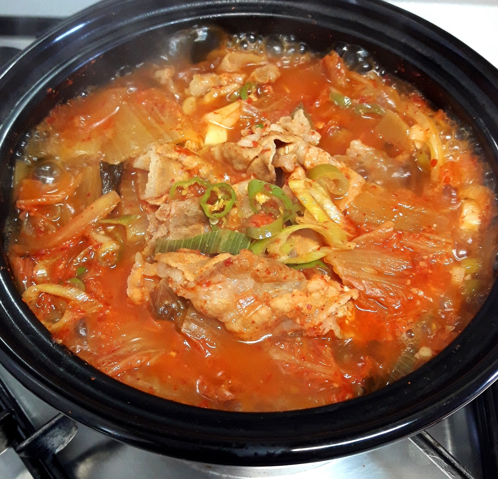
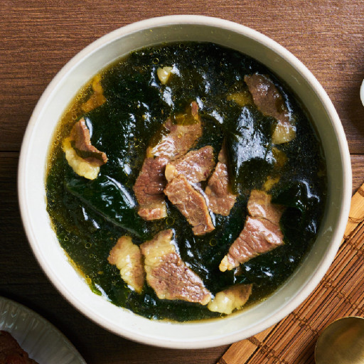
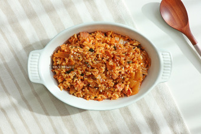
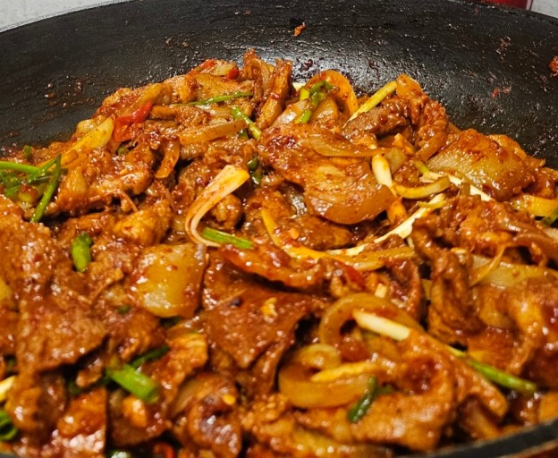

김치찌개
가격: 5500원
레시피
- 돼지고기 150g
- 묵은지 180g
- 두부 170g
- 양파 130g
- 홍고추 1개 20g
- 청양고추 1개 15g
- 다진 마늘 1큰술
- 대파 30g
- 코인 육수 2개
- 들기름 1큰술
- 고춧가루 1큰술
- 물 700ml
0 표

< class="dish-details">
된장찌개
가격: 5000원
레시피
- 대패삼겹살 200g
- 채썬무 3컵
- 물 3컵하고 1/2컵
- 된장 3큰술
- 고추장 1큰술
- 대파반대/청양고추1개/홍고추1개
- 간마늘 1큰술
- 설탕 1/3큰술
0 표

미역국
가격: 5000원
레시피
- 마른 미역 25g
- 소고기 양지 250g
- 멸치 다시마 육수 2L
- 소고기양념: 양조간장 1.5스푼, 맛술 1.5스푼, 소금 3~4꼬집, 참기름 2스푼, 국간장 4스푼, 멸치액젓 1스푼, 소금 0.5스푼
0 표

김치볶음밥
가격: 3500원
레시피
- 깍두기 2/3컵
- 잘 익은 파김치 약간
- 고춧가루 0.5T
- 대패삽겸살 반줌
- 대파 약간
- 설탕 0.5T
- 진간장 1T
- 소금 적당량
- 밥 한공기
- 참기름 0.5T
- 통깨
0 표

제육볶음
가격: 5000원
레시피
- 대패삼겹살 500G
- 식용유 한숟갈
- 후추 아주 넉넉하게 뿌리기
- 양파 반개
- 대파 큰 것 한대
- 당근 약간
- 청양고추 한개
- 홍고추 반개
0 표